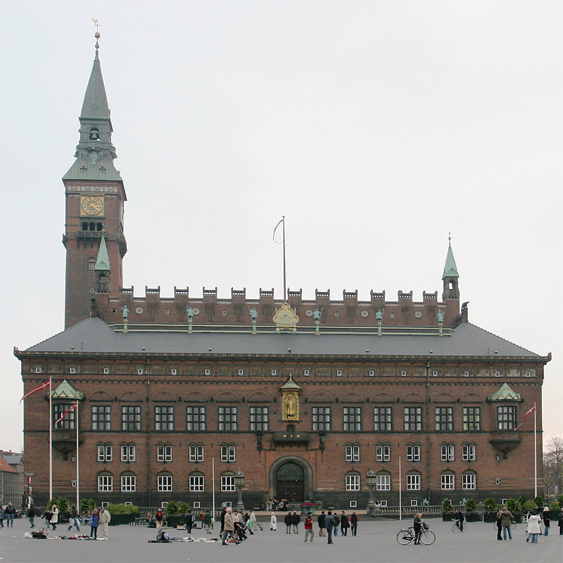

Københavns Rådhus
Det er tegnet af arkitekten Martin Nyrop, som var inspireret af Rådhuset i Siena, Italien. Han vandt en konkurrence, og rådhuset blev opført fra 1892 til 1905. Rådhuset blev indviet den 12. september 1905. Murermestre var H.O. Rasmussen og Olaus Mynster. Københavns Rådhus er nationalromantikkens hovedværk i Danmark.[1] Rådhuset domineres af den imponerende facade, den gyldne statue af Absalon lige over balkonen og det høje slanke tårn. Rådhustårnet er en af de højeste bygninger i København (105,6 m). Set fra Rådhuspladsen består rådhuset af tre tværstillede bygningskroppe, forbundet af to langsgående ved Vester Voldgade og H.C. Andersens Boulevard. Mellem de tre tværstillede bygninger ligger den overdækkede Rådhushal og Rådhushaven. Rådhustårnet er placeret i langsiden mod Vester Voldgade, ud for den miderste tværbygning. Duetårnet er i den modstående længdefløj ved H.C. Andersens Boulevard. Foran rådhuset er en forplads inden selve Rådhuspladsen og langs H.C. Andersens Boulevard et grønt areal som var en større have ved Vestre Boulevard. (Kilde: Wikipedia)